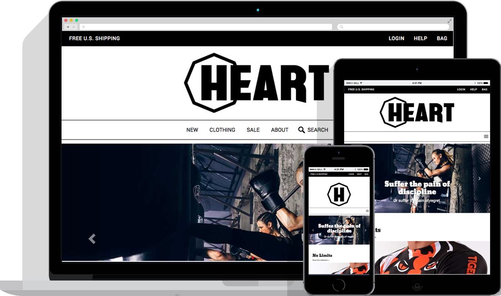

Project Summary
Tasked with creating a brand-identity for a Mixed Martial Arts clothing company specifically focused on a gender inclusive audience. I created a logo and responsive website.
Problem Space
How can we develop a brand for Mixed Martial Arts clothing company whose focus is on accessibility for all genders?
Process
I iterated on the logo both by sketching on paper, and drafting logos in Adobe Illustrator. Once a responsive logo was created I began sketching web layouts, and testing to ensure the most optimal information architecture. Then I began front-end development using HTML, CSS, and JavaScript.
Title
Heart Branding and Web Design
Date
Jan 2016 - Mar 2016
Tasks
- User Research
- Content Strategy
- Web Design
- Web Development
Tools
- Adobe Illustrator
- Adobe Photoshop
- HTML/CSS
- JavaScript